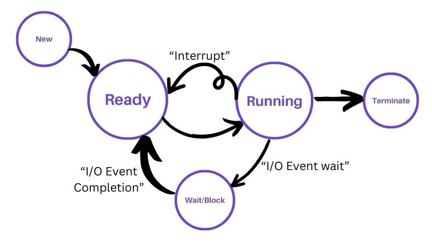
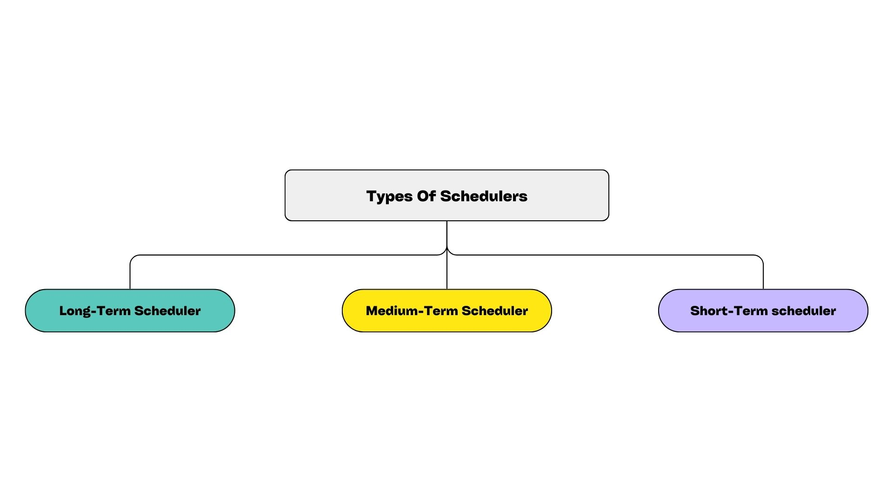
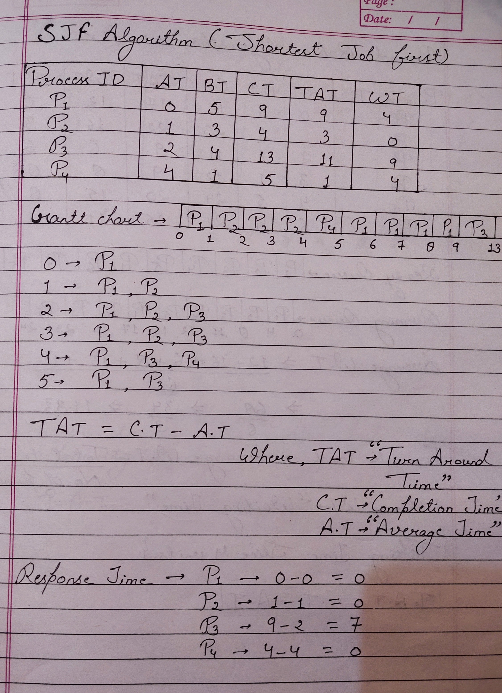
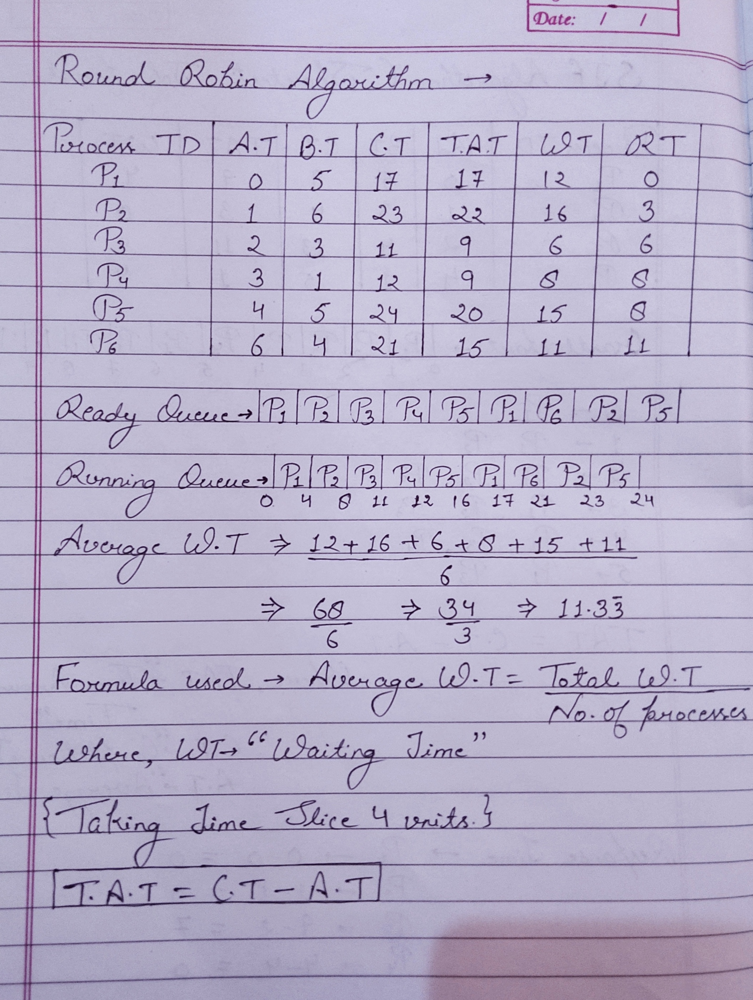
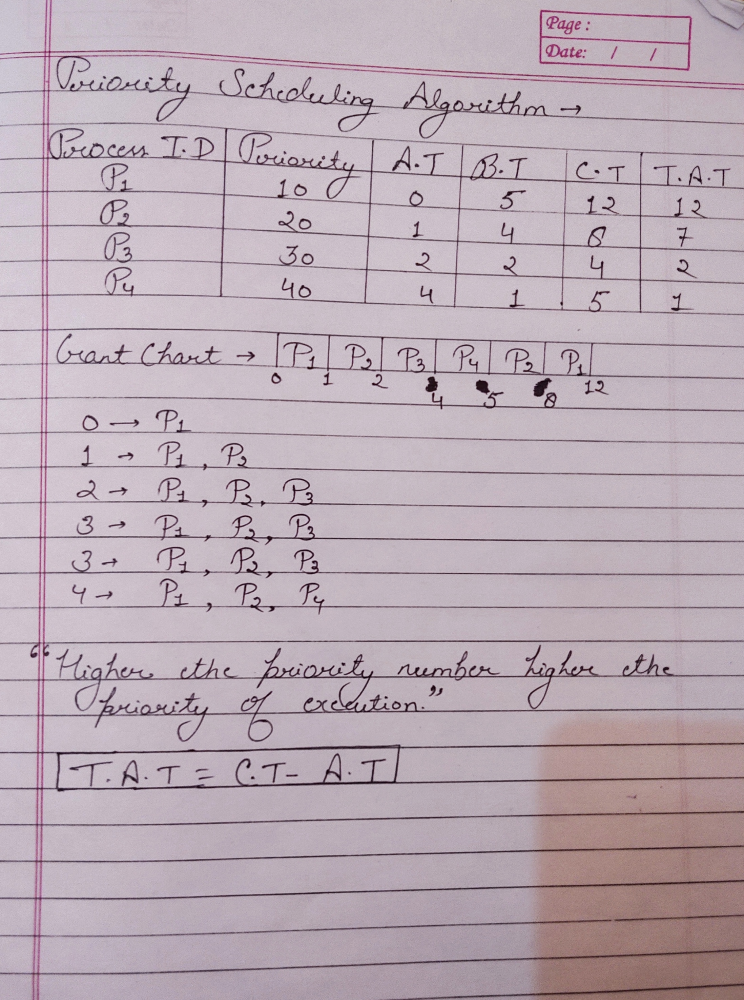

Process Concept
Process Concept:- A Process is basically aprogram in execution. Associated with each process is its address space, a list of memory location from some minimum(usually 0) to some maximum, which the process can read and write. A process is just an executing, program, including the current values of the program counter, registers and variables.Conceptually, each process has its own virtual CPU. A key idea here is that a process is an activity of some kind. It has a program, input, output, and a state.A single processes, with some scheduling algorithm being used to determine when to stop work on one process and service a different one.
Attributes/Characteristics of Process:-- Process ID
- Process State
- CPU Registers
- Account Information
- I/O Status Information
- CPU Scheduling Information
Process Control Block
a Process Control Block (PCB) is a data structure that contains information about a particular process being managed by the operating system. The PCB is essential for the operating system to effectively manage processes and ensure proper execution. Each process in the system has its own PCB, which holds various pieces of information needed by the operating system to control and manage the process.
The PCB typically includes various pieces of information about the process, including:
- Process State: This indicates whether the process is running, ready, blocked, etc.
- Program Counter: This keeps track of the address of the next instruction to be executed for the process.
- CPU Registers: These are the contents of CPU registers such as accumulator, index registers, stack pointers, etc. These values need to be saved when the process is switched out so that it can be resumed later.
- Process ID (PID): A unique identifier assigned to each process.
- Priority: Some operating systems support priority scheduling, so the priority of the process in relation to other processes is stored in the PCB.
- Memory Management Information: Information about the memory allocated to the process, including the base address, limit, page tables, etc.
- I/O Status Information: Information about open files, devices allocated, etc.
- Accounting Information: Statistics related to resource usage, such as CPU time consumed, time limits, etc.
Process State Transitions:
Process State Transitions defines the cycle of the process from when the process is created, prepared, and terminated.
The various Process State Transitions are -
- New State
- Ready State
- Runnning
- Wait/Block State
- Terminated
- New State: New is a state where the process is created.
- Ready State: Ready is a state where the process is ready for the execution.
- Running State: Running is a state where the process is in running state and other process are in queue.
- Wait/Block State: It is a state where process wants some I/O event, CPU Switches the process into wait/block state for the I/O event. After the completion of the I/O event the process switches back to the ready state.
- Terminated: Termination is a state where the process is terminated after completion of the events or task.
What are Schedulers?
Schedulers are software components responsible for managing and controlling the execution of tasks or processes within a computer system. They are crucial in multitasking operating systems, where multiple processes or threads compete for CPU time. The primary goal of a scheduler is to allocate system resources efficiently while meeting various criteria such as fairness, responsiveness, and throughput.
Types Of Schedulers
There are three types of Schedulers.
- Long-Term Scheduler
- Short-Term Scheduler
- Medium-Term Scheduler
Long-Term Scheduler:
Long-Term Scheduler is also known as job scheduler. It chooses(secondary memory) and keeps them in the ready queue maintained in the primary memory.Long-Term Scheduler mainly controls the degree of multiprogramming. The purpose of Long-Term Scheduler is to choose a perfect mix of I/O bound and CPU bound processes among the jobs present in the pool.
Medium-Term Scheduler:
Medium-Term Scheduler takes care of the swapped out process. If the running state processes needs some I/O time for the completion, then there is a need to change its state from running to waiting.
It reduces the degree of multi-programming. The swapping is necessary to have a perfect mix of the processes in the ready queue.
Short-Term Scheduler
Short-Term Scheduler is also known as a CPU Scheduler. It selects one of the jobs from the ready queue and dispatch to the CPU for execution.
A scheduling algorithm is used to select which job is going to be dispatched for the execution. The job of the Short-Term Scheduler can be very critical in the sense that if it selects job whose CPU burst time is very high then all the jobs after that, will have to wait in the ready queue for a very long time.This problem is called Starvation which may arise if the Short-Term Scheduler makes somes mistakes while selecting the job.
Difference between Long-Term, Short-Term, Medium-Term Scheduler-
| S.NO | Long-Term Scheduler | Short-Term Scheduler | Medium-Term Scheduler |
|---|---|---|---|
| 1 | It is also known as job Scheduler | It is also known as CPU Scheduler | It is a process swapping Scheduler |
| 2 | It controls the degree of Multi-programming | It provides lesser control over degree of Multi-programming. | It reduces the degree of Multi-programming. |
| 3 | Speed is lesser than Short-Term Scheduler. | Speed is faster among the other two. | Speed is in between the Long-Term & Short-Term Scheduler |
| 4 | It takes process from the job pool. | It takes process form the ready state. | It takes process from running or wait/block state. |
Performance Criteria
Performance criteria in operating systems refer to the criteria or factors used to evaluate the efficiency, responsiveness, and overall effectiveness of the operating system in managing system resources and providing services to users.These criteria are essential for assessing the performance of an operating system and identifying areas for improvement.
Some common performance criteria in operating systems include:
- Throughput: Throughput measures the rate at which the operating system can process tasks or requests over a given period. It is typically expressed in terms of tasks completed per unit of time and indicates the system's overall processing capacity.
- Response Time: Response time, also known as latency, is the time it takes for the operating system to respond to a user request or input. It includes the time taken to initiate the request, process it, and generate a response. Low response times contribute to a more responsive and user-friendly system.
- Turnaround Time: Turnaround time refers to the total time taken to execute a task or process from the time it is submitted until it is completed. It includes both processing time and waiting time in queues. Minimizing turnaround time helps improve system efficiency and user satisfaction.
- Waiting time: A scheduling algorithm does not affect the time required to complete the process once it starts execution. It only affects the waiting time of a process.
- Completion Time: The completion time is the time when th process steps executing, which means that rhe process has completed its burst time and it completely executed.
- .I/O Throughput: I/O throughput evaluates the rate at which input/output operations are processed by the operating system, including disk reads and writes, network communication, and peripheral device access.
- .CPU Utilization: CPU utilization measures the percentage of time the CPU spends executing tasks compared to the total time available. High CPU utilization indicates efficient resource utilization and effective workload management, while low utilization may indicate underutilization or inefficient scheduling.
- Memory Utilization:: Memory utilization measures the percentage of system memory (RAM) used by active processes and the operating system. Efficient memory utilization ensures optimal performance by avoiding excessive paging or swapping and minimizing memory-related bottlenecks.
What is Scheduling..?
Scheduling in operating systems refers to the process of allocating system resources to different tasks or processes over time. It involves deciding which process should run when, how long it should run, and in what order. Scheduling is a fundamental concept in operating systems and plays a crucial role in ensuring efficient utilization of system resources, improving system performance, and providing a responsive user experience.
Advantages Of Scheduling:- Optimal Resource Utilization: Scheduling ensures that system resources, such as CPU time, memory, and I/O devices, are allocated efficiently among competing processes. By prioritizing and scheduling tasks based on predefined criteria, scheduling algorithms maximize resource utilization and minimize idle time, thus optimizing system throughput and performance.
- Improved Responsiveness: Effective scheduling algorithms prioritize interactive and time-sensitive tasks, such as user input and system interrupts, to ensure quick response times and a responsive user interface. By minimizing response times and reducing latency, scheduling enhances system responsiveness, leading to a better user experience and improved productivity.
- Enhanced System Performance: Scheduling plays a crucial role in optimizing system performance by managing the execution order and timing of tasks. By employing efficient scheduling algorithms and strategies, operating systems can reduce overhead, minimize resource contention, and improve overall system throughput and performance.
- Support for Multitasking and Multiprogramming: Scheduling enables multitasking and multiprogramming by allowing multiple processes to run concurrently on a single CPU or across multiple CPUs. By switching rapidly between processes and managing their execution in a time-shared manner, scheduling enables users to perform multiple tasks simultaneously, increasing productivity and efficiency.
- Fairness and Equity: Scheduling algorithms strive to provide fair and equitable access to system resources for all processes. By allocating CPU time and other resources fairly among competing processes, scheduling ensures that no single process monopolizes system resources, leading to a balanced and equitable distribution of computing resources among users and applications.
A scheduling algorithm is a computational procedure or set of rules used by an operating system to determine the order in which tasks or processes are executed on a computer system's CPU. Scheduling algorithms play a crucial role in managing system resources and ensuring efficient utilization of CPU time.
Scheduling can be done by two methods:
- Preemptive Scheduling: In preemptive scheduling, the operating system can interrupt a currently executing process and allocate the CPU to another process with a higher priority or one that has become runnable.
- Non-Preemptive Scheduling: Non-preemptive scheduling does not allow the operating system to interrupt a process while it is executing. Once a process starts running, it continues until it completes its CPU burst or blocks for I/O.
The most common Scheduling algorithms are-
- FCFS(First Come First Serve) Algorithm: FCFS stands for First-Come, First-Served, and it is one of the simplest scheduling
algorithms used in operating systems. In FCFS scheduling, the processes are executed in the order they arrive in the
ready queue. The process that arrives first is scheduled first for execution, and it continues executing until it
completes or blocks for I/O or any other reason.
Here is an example of FCFS Algorithm-
- SJF(Shortest Job First) Algorithm: SJF stands for Shortest Job First.
In SJF scheduling, the process with the smallest execution time is selected for execution next.
It aims to minimize the average waiting time for processes and maximize CPU utilization.
Here is an example of SJF Algorithm-
 - RR(Round Robin) Algorithm: Round robin Algorithm is designed to provide fair CPU time allocation to all processes by
allowing each process to execute for a fixed time interval called a time quantum or time slice.
Once a process has consumed its time quantum, it is preempted and placed back at the end of the
ready queue to await its next turn.
Here is an example of RR Algorithm-
 - Priority Algorithm:The scheduler selects the process with the highest priority for
execution. If multiple processes have the same highest priority, various factors can be used to
determine the order of execution, such as time of arrival or additional scheduling policies like
Round Robin.
Here is an example of Priority Algorithm-
